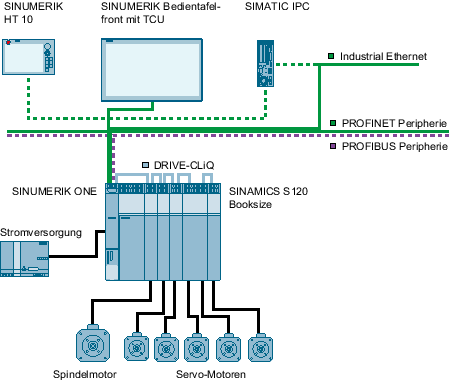

Konfiguration Fräsmaschine

gestrichelte Linien | optionale Verbindungen |
Beispielkonfiguration
Am Beispiel der abgebildeten Systemkonfiguration wird eine Erst-Inbetriebnahme durchgeführt:
Vorbereitung Antriebssystem Automatische Erst-Inbetriebnahme Konfiguration Einspeisung Konfiguration Achse/Spindel Die Konfiguration weiterer Achsen ist analog zur beschriebenen Vorgehensweise durchzuführen. Achzuordnung
|